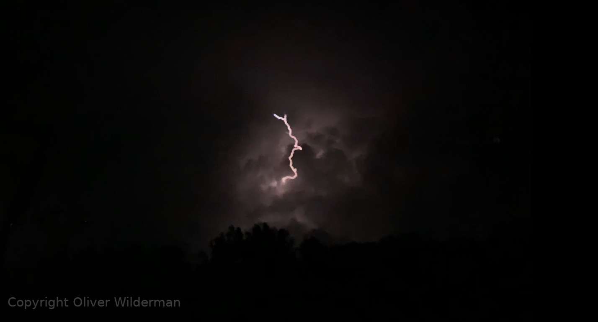

So while I haven't been able to do a lot of storm spotting (or chasing) yet. I still have been doing a lot of work. I take pictures of lightning and storms that come my way and while that doesn't happen a lot where I live I still get quite a few good pictures! For example, here is one I took last year of a sweet lightning strike in the clouds!
Once I have a job, have a car, and am able to drive I plan on getting a subaru forester. The 2010 model to be exact, I plan on putting in custom horns and tripods for cameras. I also want to put bulletproof glass for the windows and windshield. This will protect from hail, debris, and rocks that may hit my car.
It's gonna be pretty sick!
So right now my current setup consists of my phone. I use the Iphone Xr, it's actually the exact phone I used take that photo of lightning in the clouds! My current computer is a Lenovo Ideapad 300. It's the best but its not the worst either. The battery life is drained but I don't really mind. It has an ssd and 4gb of ram but I'm upgrading to 16gb soon. I really like it but might upgrade it soon It will work for what I need though. Sorry enough computer talk! Let's get back to the gear. My weather radio is the Eton FRX1 weather radio. It's a hand crank radio but it also has AM/FM radio and a micro-usb charging cable if I want to charge it with a cord. Very helpful for emergencies and finding my way in the dark.
So right now I still need a camera and a car. I found a decent dslr camera on amazon with the right lense I need for about $600 dollars. As I have said before the car I want is a Subaru forester. I can usually get one of those for about $6000. With the job I have lined up I can get $12,000 a year. This would leave almost half of that for other upgrades like new lenses, windsheilds (I hear those break a lot when storm chasing!), Spotify (because spotify is a requirement), and many other things like food and gas. Hopefully I will have most of that by sometime in 2022 (if not 2021!). I think I want to get the camera first that way I can work with what I got right now and seeing as it is only $600 it seems kinda worth it to start taking professional photos this spring and summer when the storms start rolling in where I live. this will leave plenty of time for me to get enough money for a car so I can start going further than my hometown for awesome storms.
Alright, So I have a job now! $11.00 an hour pumpin gas! So in one year I'll make $12,000. This leaves plenty of money to buy all the junk I need!
I will continue to keep this page updated as I buy more camera gear and go on more photo shoots. Stay Tuned!